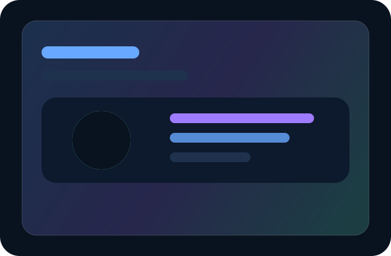
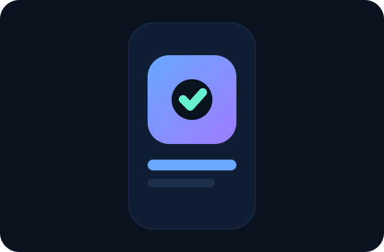
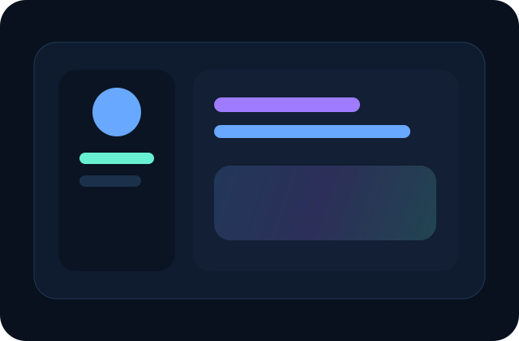

System definition
Tokenize color, blur, radii, shadows, type, and motion before composing screens.
Design tokens + motion system
This portfolio prototype unifies hero, timeline, projects, and chat with a shared token set, restrained motion primitives, and polished transitions that feel like a single product rather than stitched-together sections.
Animated timeline progress
The timeline uses the same radius, gradients, shadows, and easing as the rest of the interface while progress animates via transforms instead of layout-heavy measurements.
Tokenize color, blur, radii, shadows, type, and motion before composing screens.
Fade-up sections and card staggering create rhythm without overwhelming the user.
Magnetic buttons, active nav tracking, and chat transitions make the product feel alive.
System fonts, lazy imagery, reduced motion, and optimized properties keep it smooth.
Staggered card entrance
Each project card shares the same dark surfaces, gradients, hover language, and motion timings, so the showcase feels curated and consistent.

A dashboard concept with restrained glassmorphism, responsive metrics, and guided reveal motion.
Discuss project
A launch campaign interface using the same easing, depth system, and accent gradients as the site shell.
View process
A collaborative assistant experience where panels, chips, and states all follow the shared motion language.
Back to topChat panel transitions
The chat panel borrows identical color, blur, type, and easing tokens so its entrance and close motions feel native to the rest of the interface.
Open the panel to preview the micro-interactions, shared depth system, and carefully tuned motion states.